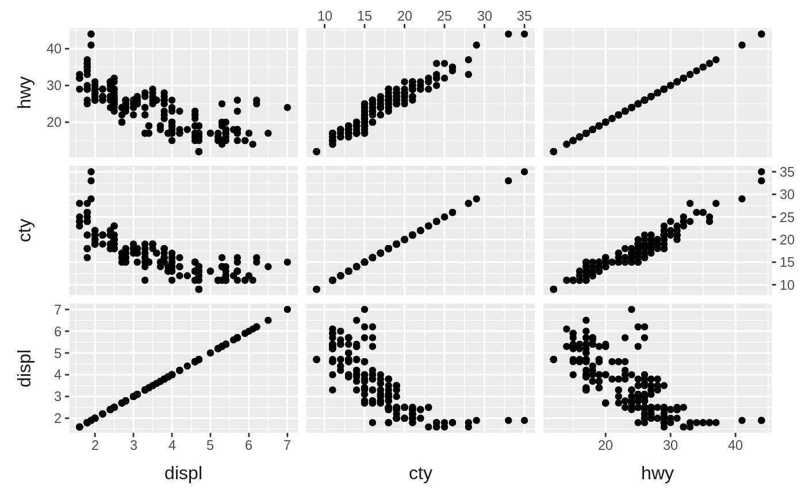
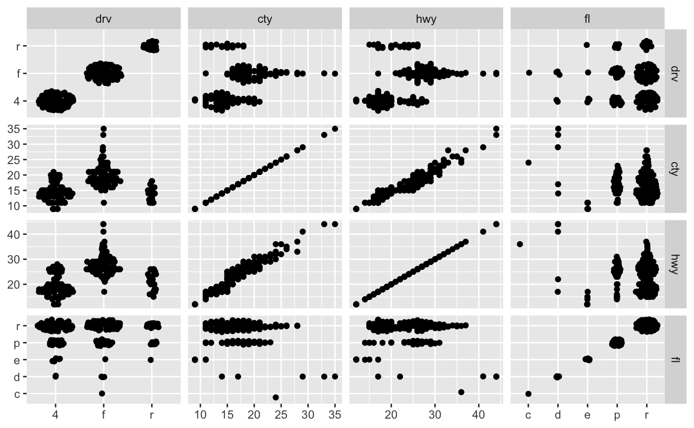
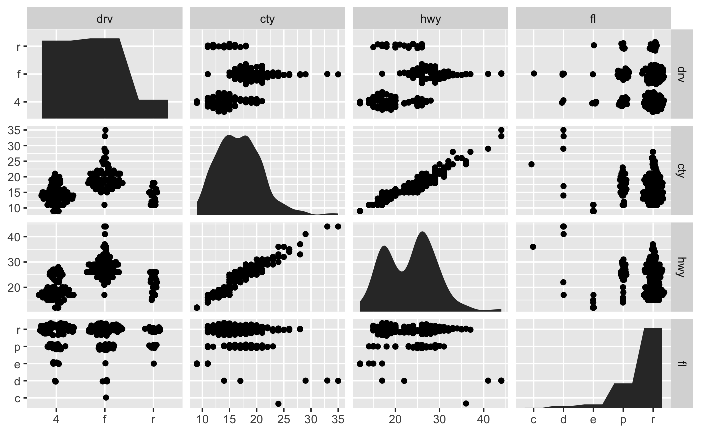
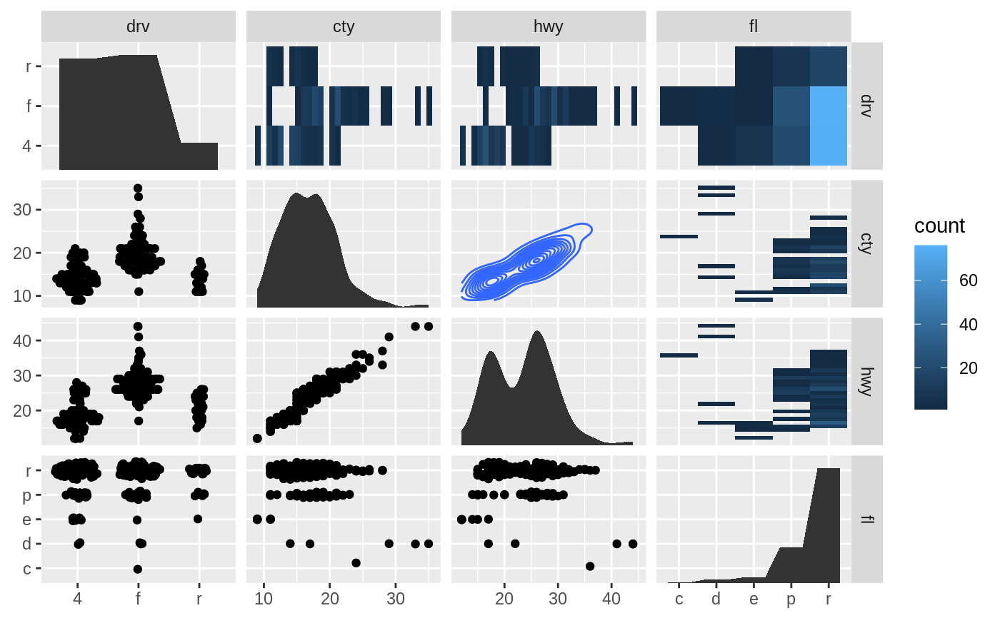
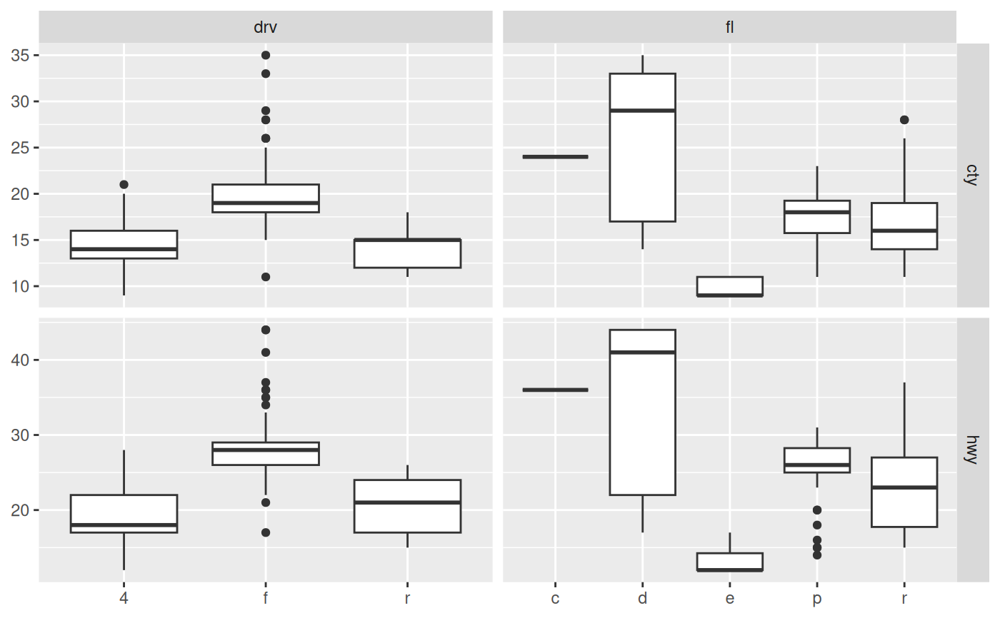

The facet_matrix() facet allows you to put different data columns into
different rows and columns in a grid of panels. If the same data columns are
present in both the rows and the columns of the grid, and used together with
ggplot2::geom_point() it is also known as a scatterplot matrix, and if
other geoms are used it is sometimes referred to as a pairs plot.
facet_matrix is so flexible that these types are simply a subset of its
capabilities, as any combination of data columns can be plotted against each
other using any type of geom. Layers should use the .panel_x and .panel_y
placeholders to map aesthetics to, in order to access the row and column
data.
facet_matrix( rows, cols = rows, shrink = TRUE, switch = NULL, flip.rows = FALSE, alternate.axes = FALSE, layer.lower = NULL, layer.diag = NULL, layer.upper = NULL, layer.continuous = NULL, layer.discrete = NULL, layer.mixed = NULL, grid.y.diag = TRUE )
Arguments
| rows, cols | A specification of the data columns to put in the rows and
columns of the facet grid. They are specified using the |
|---|---|
| shrink | If |
| switch | By default, the labels are displayed on the top and
right of the plot. If |
| flip.rows | Should the order of the rows be reversed so that, if the rows and columns are equal, the diagonal goes from bottom-left to top-right instead of top-left to bottom-right. |
| alternate.axes | Should axes be drawn at alternating positions. |
| layer.lower, layer.diag, layer.upper | Specification for where each layer
should appear. The default ( |
| layer.continuous, layer.discrete, layer.mixed | As above, but instead of referencing panel positions it references the combination of position scales in the panel. Continuous panels have both a continuous x and y axis, discrete panels have both a discrete x and y axis, and mixed panels have one of each. Unlike the position based specifications above these also have an effect in non-symmetric grids. |
| grid.y.diag | Should the y grid be removed from the diagonal? In certain situations the diagonal are used to plot the distribution of the column data and will thus not use the y-scale. Removing the y gridlines can indicate this. |
Note
Due to the special nature of this faceting it slightly breaks the ggplot2 API, in that any positional scale settings are ignored. This is because each row and column in the grid will potentially have very different scale types and it is not currently possible to have multiple different scale specifications in the same plot object.
See also
geom_autopoint, geom_autohistogram, geom_autodensity, and position_auto for geoms and positions that adapts to different positional scale types
Examples
# Standard use: ggplot(mpg) + geom_point(aes(x = .panel_x, y = .panel_y)) + facet_matrix(vars(displ, cty, hwy))# Switch the diagonal, alternate the axes and style strips as axis labels ggplot(mpg) + geom_point(aes(x = .panel_x, y = .panel_y)) + facet_matrix(vars(displ, cty, hwy), flip.rows = TRUE, alternate.axes = TRUE, switch = 'both') + theme(strip.background = element_blank(), strip.placement = 'outside', strip.text = element_text(size = 12))# Mix discrete and continuous columns. Use geom_autopoint for scale-based jitter ggplot(mpg) + geom_autopoint() + facet_matrix(vars(drv:fl))# Have a special diagonal layer ggplot(mpg) + geom_autopoint() + geom_autodensity() + facet_matrix(vars(drv:fl), layer.diag = 2)# \donttest{ # Show continuous panels in upper triangle as contours and rest as binned ggplot(mpg) + geom_autopoint() + geom_autodensity() + geom_density2d(aes(x = .panel_x, y = .panel_y)) + geom_bin2d(aes(x = .panel_x, y = .panel_y)) + facet_matrix(vars(drv:fl), layer.lower = 1, layer.diag = 2, layer.continuous = -4, layer.discrete = -3, layer.mixed = -3)# } # Make asymmetric grid ggplot(mpg) + geom_boxplot(aes(x = .panel_x, y = .panel_y, group = .panel_x)) + facet_matrix(rows = vars(cty, hwy), cols = vars(drv, fl))